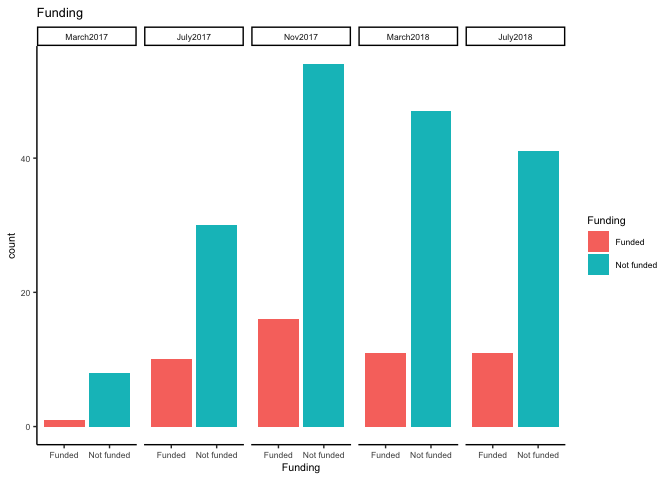

ESRC New Investigators Grant (Part 1)
Given my recent grant application experience with ESRC, I wanted to find out the likelihood of my grant application from a data-driven perspective. I was told by grant administrators, friends, colleagues and others that the grant is very competitive, but I wanted a further breakdown of what it means by ‘very competitive’, and to understand how my chances are like across different rounds. Since the data for decisions made on ESRC research grants is made available online, I decided to try and understand this from a data perspective.
The ESRC New Investigators Grant is a relatively new scheme for early career researchers who want to become a principal investigator (PI) and work on an independent piece of research. The scheme only supports UK research organisations, with grants ranging from £100,000 to £300,000 full Economic Cost (fEC) can be awarded. More information about the scheme can be found here.
Since the scheme is new, there is historical data only for 5 rounds (March, July and Nov 2017, and March and July 2018). The historical data points are small, so please take the analyses in this post with a pinch of salt. These analyses also do not explain future outcome trends, but merely an understanding of historical patterns.
From the applicants perspective, there are two critical stages in the application process. The first stage relates to the reviews given by external reviewers. Three is the minimum number of reviewers that is necessary to review a proposal. If you pass the first stage, your proposal will be forwarded to the Grants Assessment Panel (GPAs), aka Stage 2. Your proposal will be submitted to two Panel Introducers who will read all the documents (proposal, reviews and response to reviews). They will need to rate the proposal before introducing it to the panel. The panel will only be able to read the reviewers’ comments and your response to the reviews.
Stage 1
According to this link, proposals receiving an average reviewer score of greater than 4.5 are forwarded to the next round. Those who scored less than 4.5 are normally rejected from the pile. For example, if each of the three reviewers had given you score, say 4 (Good), 5 (Excellent) and 6 (Outstanding), then your average score will be 5. Congratulations! You have made it to Stage 2.
Note, it does not mean that if you submitted your proposal before the deadline (i.e. end July) for the November panel means your application will be evaluated in the November panel. The timetable can be found on this website. One plausible delay could be that there were insufficient reviewers that reviewed your work so your application will be pushed back. See this link on page 7 and 8. It is also stated on the website that there is no guarantee that your application will be evaluated on the round you applied for, so just be mindful of it. It is necessary to have at least a minimum of 3 reviewers before the ESRC can decide on whether your proposal could be forwarded to the GPAs. The number of reviewers may increase at the discretion of the ESRC.
Some information about the data
The data that I have extracted from PDFs found on the ESRC website gives me the following information:
- the
grant referenceof the application - the
outcomeof the funding application - the
score category(I will explain later) - the
roundthat the application was evaluated
Funding vs Non-Funded percentage
One of the first questions I wanted to find out is the competition level of the ESRC New Investigators Grant scheme
In total, 229 applications were submitted to the ESRC New Investigators Grant. The table and plot below show that the estimated success rate is 21%, while the failure rate is 79%. Simplistically speaking, this rate is equivalent to submitting a research paper to a top-tier journal, but not as competitive as a super top-tier journal. Nonetheless, it is fair to say that this scheme is highly competitive given that applications can come from different departments with wide-ranging research topics, researchers who may have experience of up to 4 years (many more publications than a newly PhD grad) and the amount of work the applicant needs to put in to write a potentially successful grant application.
| Funded | Not funded |
|---|---|
| 49 | 180 |
| Funded | Not funded |
|---|---|
| 0.21 | 0.79 |

Aggregating funding percentage across rounds
Now, the ESRC New Investigators grant has 3 rounds every year (March, July, November). The current data exists only for 5 rounds. Below is the breakdown of the success rate for each round since the scheme started. It would appear that applications sent in for the March round (19%) have the lowest success rate, compared to the other rounds. We exclude March 2017 since there were only 9 applications at that time and it was the first time the scheme was introduced.
| March2017 | July2017 | Nov2017 | March2018 | July2018 | |
|---|---|---|---|---|---|
| Funded | 1 | 10 | 16 | 11 | 11 |
| Not funded | 8 | 30 | 54 | 47 | 41 |
| March2017 | July2017 | Nov2017 | March2018 | July2018 | |
|---|---|---|---|---|---|
| Funded | 0.11 | 0.25 | 0.23 | 0.19 | 0.21 |
| Not funded | 0.89 | 0.75 | 0.77 | 0.81 | 0.79 |
Stage 2
If you pass the initial reviews by the external reviewers (congrats!), your application will be submitted to the Grants Assessment panels (GAPs) in responsive mode. Just to iterate, if you had a score of less than 4.5, you have a much lower chance of getting through to the GAPs. But if you achieve a score of above 4.5, then your proposal is definitely forwarded to the GAPs for consideration.
At the second stage, two panel introducers will read your proposal, reviewers’ comments, and your response to the reviews. The panel introducers have to rate your proposal from a scale of 1 to 10, where 10 is an exceptionally strong proposal. You can find the rating scale in this document on page 3.
Once the introducers have gone through your application and designated a score, which is about 2 months before the panel meeting, they will introduce your proposal to the panel. Only the introducers will see all the documents. Introducers tend to be selected individuals who are familiar with the topic of your proposal. Hence, they are the most important people at this current stage! The panel will only be able to see the reviewers’ comments and your response to the reviews. Unfortunately, The panel assessors will not have a chance to go through the proposal. Given the current setup, I would imagine that your response to reviews should ideally be critically drafted such that it speaks to the reviewers’ comments and the importance of your research.
The plot below shows the score category of the grant applications in Stage 2. Now, I am not sure if the data for the score category refers only to the average scores given by the introducers or the introducers and the panel. But I would imagine that the score given by the introducer plays a considerable influence on the panel’s decision since they have access to all documents and probably know your proposal better than anyone else in the room!
From the plot below it is clear that very few proposals, if any, receives an average score between 9-10. Most applications seem to range between 7 to 8.9. All N/As are either the reviewer rejects, office rejects or the RO withdrawals, so they don’t matter at this stage.
Proportion funded
The table below is a breakdown of funding in the second round. Funding is always secured for applications with top scores (9-10). While the majority of applications with a score of 8-8.9 were funded, there is still a risk that a small proportion of them would not be funded (see March 2018), particularly if your application was ranked at the bottom of the score category. There were a few applications with a score of 7-7.9 that were funded (see July 2017/2018). However, that seems to be dependent on the number of exceptionally strong applications (i.e. 9-10) among other things. All proposals are ranked, even within the score categories. All applications that scored between 5-6.9 were not funded.
| March2017 | July2017 | Nov2017 | March2018 | July2018 | |||
| Funded | *N/A | 0 | 0 | 0 | 0 | 0 | |
| 5-6.9 | 0 | 0 | 0 | 0 | 0 | ||
| 7-7.9 | 1 | 6 | 0 | 0 | 3 | ||
| 8-8.9 | 0 | 3 | 15 | 7 | 7 | ||
| 9-10 | 0 | 1 | 1 | 4 | 1 | ||
| Not funded | *N/A | 6 | 22 | 31 | 21 | 25 | |
| 5-6.9 | 2 | 8 | 8 | 7 | 10 | ||
| 7-7.9 | 0 | 0 | 15 | 17 | 6 | ||
| 8-8.9 | 0 | 0 | 0 | 2 | 0 | ||
| 9-10 | 0 | 0 | 0 | 0 | 0 |
Successfully funded
A clearer picture is painted in the plot below that shows the number of successful proposals funded based on a break down of the score categories. Basically, if you receive a score of 5-6.9, you have no chance of getting funding from the ESRC. You may get funded if you achieve a score of 7-7.9 as seen in July 2017/2018, but that is a precarious position to be in. Thus, one should ideally aim to get a score that is within the score category of 8-8.9, or even better, a score of 9-10 to get a higher chance of getting funded by ESRC.
What does this mean in terms of percentages? In other words, how likely am I to get funded once I pass the first stage? The first thing is to remove all the N/As since these were applications that were eliminated in the first stage. After removing all N/As, we found that only 124 applications made it through to Stage 2. We can see from the table below that an overall estimate of 40% of the proposals were funded after passing the first round.
| Funded | Not funded |
|---|---|
| 49 | 75 |
| Funded | Not funded |
|---|---|
| 0.4 | 0.6 |
This finding puts applicants (e.g. me) at ease knowing that the chances of getting awarded the grant is quite a bit higher than the initial estimated 20% success rate. However, is the 40% success rate consistent across the different rounds? A further breakdown of the Stage 2 success rate across different rounds is shown below. We can see that applications reviewed in July 2017 had a whopping 56% success rate while the lowest was in March 2017/2018 with a success rate of about 30% to 33%. Not that great I’ll say. Seems like the best time to have my application reviewed should be in the July round.
| March2017 | July2017 | Nov2017 | March2018 | July2018 | |
|---|---|---|---|---|---|
| Funded | 1 | 10 | 16 | 11 | 11 |
| Not funded | 2 | 8 | 23 | 26 | 16 |
| March2017 | July2017 | Nov2017 | March2018 | July2018 | |
|---|---|---|---|---|---|
| Funded | 0.33 | 0.56 | 0.41 | 0.3 | 0.41 |
| Not funded | 0.67 | 0.44 | 0.59 | 0.7 | 0.59 |
Conclusion
In short, this is a break down of the various stages of the ESRC New investigators Grant Scheme that are important to the applicants. Stage 1 relates to the external reviewers, and Stage 2 refers to the Panel Assessment. ESRC does not endorse the comments given by the external reviewers. The reviews are used to eliminate applications in Stage 1 and it will be used as a helpful aid during the decision making process in Stage 2. Before Stage 2, Introducer assessors will assess your proposal and introduce it to the panel. Only the introducers will see all documents. The panel will only look at the reviews and your response to the reviews. So Introducers are huge influencers at this stage.
There are certain caveats to this post, and I will repeat here again to activate the recency effect. The data points are small (only 5 rounds) so please take the results with a pinch of salt. This is by no means a predictive model that can tell you future trends. Merely some analyses of historical patterns. It is also not clear how the final scores are calculated (e.g. introducers or introducers and panel assessors’ score) before the proposals are ranked and placed in the various score categories. Finally, I do not know whether there is a positive or negative association between the external reviewers’ score and the final score given by the introducers. So I am unable to say whether a low initial score (i.e. 4.5) would be more likely to put you in the 5-5.6 score category, or vice versa. However, it does gives a clearer picture of the competitiveness of the ESRC New Investigators Grant Scheme. Now I know that my overall chances are higher (30 to 40%) than just 20% if I make it through the first stage. Also, it would appear that a better strategy to increase my chance of getting the grant is to have my application reviewed in July…
Nonetheless, these analyses are all speculative (though I do feel much better to have some data to backup what others have said) and I would take the advice from grant advisers in that you should put in the best possible application for your research topic. Accept help from whoever is willing to help you. Challenge yourself to think of creative ways to show how your proposal will stand out from others. Regularly talk to others about your grant application, though I understand you can be seen as being a bit of a narcissist (but that’s okay, it is only temporary!). Plus it will refine your ideas by getting the perspective of others. Give it your best if you have decided to write a grant application and don’t do it just for the sake of doing it. I hope this has been helpful for you. Thanks for reading.
Disclaimer: Opinions are my own and not the views of my employer.
Link to Part 2 of this post.
Link to my github page.
Copyright © Aiden Loe, Inc. All rights reserved.